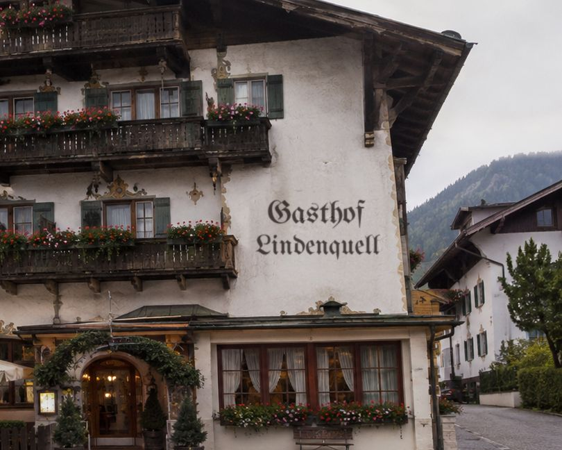

Seit 1893 an der Dorfstraße
Warum das Haus Lindenquell heißt
Unter der Linde vor dem Gasthof sprudelt seit jeher die Quelle, aus der früher das halbe Dorf sein Wasser holte. 1893 schenkte der erste Wirt dort das erste Bier aus – heute ist aus der Schänke ein Gasthof mit Stube, Saal und vierzehn Zimmern geworden. Den Brunnen gibt es noch, die Linde auch, und der Stammtisch steht seit über hundert Jahren am selben Fenster.
„Bei uns bekommt jeder einen Platz – und einen Tipp für morgen.“
